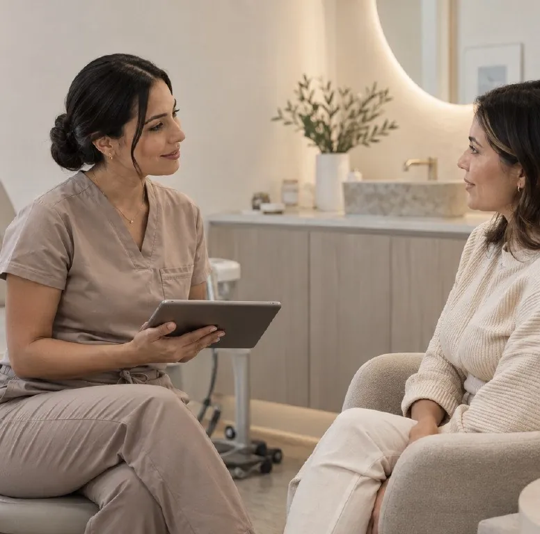

Medicina estética y vascular en Pereira
Tu piel también tiene planes.
Una clínica que combina criterio médico, acompañamiento cercano y resultados armónicos. Sofisticación sin distancia.


Dos especialidades, una mirada
Piel y circulación, cuidadas juntas.
Lo que se ve en la piel muchas veces empieza más adentro. Por eso reunimos medicina estética y medicina vascular en un mismo lugar, con el mismo criterio.

Tratamientos
Lo que podemos cuidar juntos.
Toxina botulínica
Relaja las líneas de expresión sin quitarte la expresión.
20–30 minSin incapacidadVer tratamiento →Volumen y contornoÁcido hialurónico
Volumen y soporte donde tu rostro los fue perdiendo.
30–45 minDura 9–18 mesesVer tratamiento →Firmeza y colágenoBioestimuladores de colágeno
Tu piel vuelve a producir lo que necesita.
1–3 sesionesCambio progresivoVer tratamiento →Hidratación y luzSkinboosters
Hidratación profunda que se ve en la luz de tu piel.
3 sesionesSin incapacidadVer tratamiento →Manchas y texturaPeelings médicos
Renovar la piel, capa por capa, con criterio médico.
30 minSerie de 3–6Ver tratamiento →Cicatrices y porosMicroagujas
Microestímulos precisos para que la piel se repare mejor.
45–60 minRubor 24–48 hVer tratamiento →Tono uniformeManchas y melasma
Un plan para el tono de tu piel, no una solución mágica.
Plan por etapasCon seguimientoVer tratamiento →Piel limpia y sanaLimpieza facial médica
El punto de partida de una piel bien cuidada.
60 minSin incapacidadVer tratamiento →También: Relleno de labios · Tratamiento de ojeras · Armonización facial · Hiperhidrosis · Cicatrices de acné
Arañitas vasculares
Piernas más limpias, con un tratamiento sencillo y ambulatorio.
30–45 minCaminas de inmediatoVer tratamiento →Venas y pesadezVárices
Más que estética: tus venas también hablan de tu salud.
AmbulatorioSin cirugía abiertaVer tratamiento →Diagnóstico precisoEco-doppler venoso
Ver cómo circula tu sangre antes de decidir nada.
30–40 minSin preparaciónVer tratamiento →Rojeces del rostroCuperosis y rojeces
Donde la piel y los vasos se encuentran.
20–30 min2–4 sesionesVer tratamiento →Todo empieza con una valoración médica.

Nuestra forma de trabajar
Medicina estética con criterio propio.
Para
Personas que buscan verse y sentirse mejor sin perder naturalidad.
Ofrecemos
Una experiencia médica personalizada, serena y transparente.
Porque
La confianza nace de entender cada decisión y sentirse acompañada.
Así es tu camino
Belleza que se acompaña.
La confianza nace de entender cada decisión. Por eso nada empieza con una aguja: empieza con una conversación.
1
Te escuchamos
Conversamos sobre lo que quieres cuidar y lo que no quieres cambiar.
2
Evaluamos
Analizamos tu piel, tu rostro o tus venas con criterio médico antes de recomendar.
3
Tu plan
Te explicamos opciones, tiempos y costos. Decides con calma, sin presión.
4
Te acompañamos
El cuidado continúa después de tu cita, con controles y seguimiento.
Del blog
Para leer antes de tu cita.
Precio del bótox en Pereira: qué define el valor
Zonas, producto, quién lo aplica y si incluye control: eso explica por qué los valores cambian tanto. Y cuándo un precio muy bajo es una alerta.
Leer →¿Cuánto rinde 1 ml de ácido hialurónico en la cara?
Es menos volumen del que imaginas. Para qué puede alcanzar, por qué la cantidad se define viéndote en persona y qué pasa si algo no queda bien.
Leer →¿Cuánto dura el bótox? Qué esperar mes a mes
No se ve el mismo día, se ve completo a las dos semanas y se suele repetir cada 4 a 6 meses. La línea de tiempo, para que no te pille el evento.
Leer →Lo que nos mueve
Cuidamos la piel con ciencia, sensibilidad y una mirada profundamente personal. Belleza que se acompaña, no que se impone.

Valoración médica
Hablemos de tu piel.
Primero te escuchamos. Luego recomendamos.